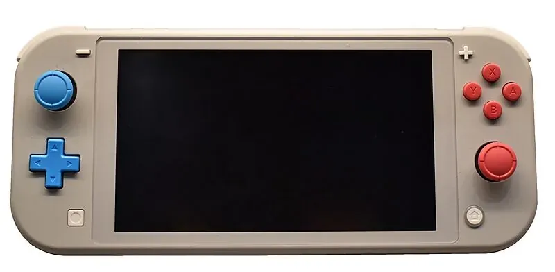

2019 年发布
Nintendo Switch Lite
纯掌机 · 一体式设计 · 更亲民的价格
$199
首发价格
5.5寸
屏幕尺寸
275g
重量
3-7h
续航时间
📖 历史与背景
2019年9月20日，任天堂推出Nintendo Switch Lite——Switch家族的纯掌机版本。Switch Lite采用一体式设计，Joy-Con不可拆卸（固定在机身上），D-Pad（十字键）回归，重量仅275g（比标准Switch的297g轻了22g），屏幕缩小为5.5寸（标准版为6.2寸）。
Switch Lite的主要目标用户是纯掌机玩家和预算有限的消费者。它不支持TV模式输出（没有底座的视频芯片）、不支持可拆卸Joy-Con的体感功能（部分需要体感的游戏需要额外购买Joy-Con）。但所有Switch游戏只要是"掌机模式可玩"的，都可以在Lite上运行。
任天堂推出Switch Lite的时机很有讲究——2019年正值Switch销量如日中天，但不少玩家反映标准版太大太重不便于随身携带。Lite更小的体积和$199的亲民价格（标准版$299）成功扩大了掌机用户群，尤其在圣诞节期间大卖。Lite的总销量超过2500万台。
⚙️ 硬件规格
CPU/GPU
NVIDIA Tegra X1 (16nm续航版规格)
屏幕
5.5寸 1280×720 LCD
内存
4GB LPDDR4
存储
32GB（支持microSD扩展）
续航
3-7小时（因游戏而异）
重量
约275g
D-Pad
真正十字键（非分离方向键）
连接
Wi-Fi + 蓝牙 + NFC
🎮 掌机最佳伴侶
- 适合的游戏：所有支持掌机模式的Switch游戏均可在Lite上运行，《塞尔达传说：旷野之息》《宝可梦 朱/紫》《动物森友会》等掌机体验一流
- 不适合的游戏：需要分离Joy-Con体感的游戏（如《健身环大冒险》《1-2-Switch》）、需要TV模式的游戏（如《LABO》系列）无法在Lite上原生游玩
- 十字键回归：Lite用真正的十字键取代了标准版的分离方向键——玩《屋顶棍球》《俄罗斯方块99》等需要精准方向控制的游戏体验更好
- 颜色选择：首发有黄色、灰色、青绿色三种配色，后续推出了蓝色、粉色、珊瑚色等更多色彩
- 宝可梦专用机：Lite因其便携性和亲民价格，被许多宝可梦玩家视为"宝可梦专用机"
🏆 市场表现
- 全球销量：超过2500万台，占Switch全系列销量的约15-20%
- 蓝海扩圈：Lite的低价策略吸引了之前觉得Switch太贵的消费者，也促进了宝可梦等游戏的销量
- 二手市场活跃：Lite因其便携性和质量，在二手市场上保值率很高
- 与原版共存：任天堂保持标准版+Lite+OLED三线产品线，覆盖了300-350美元的价格区间
- 后继机型：Switch 2发布后，Lite是否会有"Lite 2"版本尚未确定
💡 趣闻与冷知识
- Switch Lite是任天堂首款将D-Pad（十字键）放回掌机上的产品——自从2011年的3DS之后，任天堂的掌机就没有真正的十字键了（只有分离的方向键）
- Lite虽然不支持TV模式，但它的Type-C接口仍可以用于充电和连接底座——只是不会输出视频信号。有第三方底座通过破解让Lite强制输出到电视，但需要改装硬件
- Lite的L/R键和ZL/ZR键比标准版更硬一些，很多格斗玩家反馈更喜欢Lite的肩键手感
- Lite的摇杆和标准版一样存在"漂移"风险——但维修更方便，因为Joy-Con是一体机不需要拆装手柄
- 一些玩家用Lite作为"出差二手机"——在家里玩OLED版，出差带Lite，一台主机账号共享进度